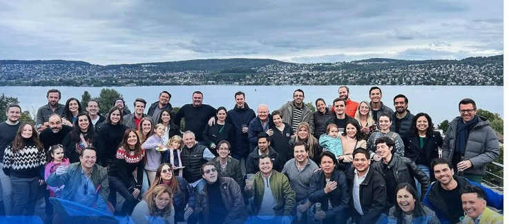
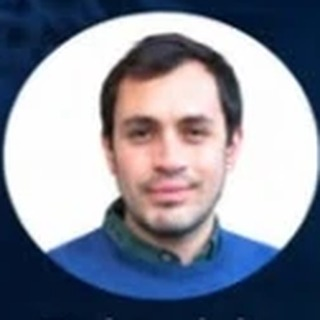
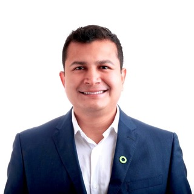
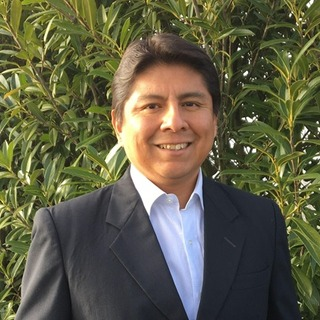
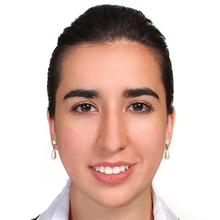
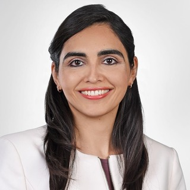
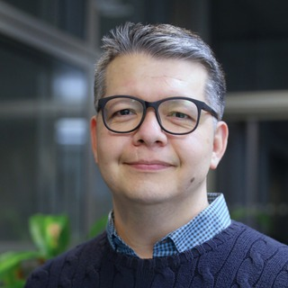
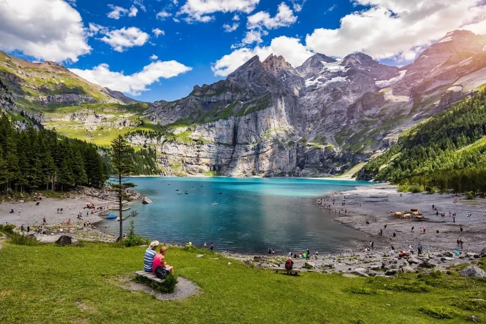

La comunidad EXATEC en Suiza.
Nuestra razón de ser es generar y fortalecer comunidades EXATEC en todo Suiza: conectar a los egresados del Tec de Monterrey que viven, estudian o trabajan en el país — de Ginebra a St. Gallen — a través de seis capítulos regionales que siguen creciendo cada año.

La comunidad EXATEC Suiza en uno de sus encuentros
Fuente: Reportes Anuales EXATEC Suiza 2023–2025 (315 miembros a cierre de 2025) y cifras 2026 de la mesa directiva.
¿Qué es EXATEC?
EXATEC (Ex Alumnos del Tecnológico de Monterrey) es la red global que agrupa a todos los egresados del Tec, presente en más de 30 países. Fuera de México, la comunidad se organiza en capítulos locales que mantienen vivo el sentido de pertenencia, generan redes profesionales y acompañan a quienes llegan a un país nuevo.
EXATEC Suiza nació de una reunión informal en Ginebra en el verano de 2020 y tomó protesta como asociación formal el 16 de julio de 2022. Desde entonces hemos crecido de 170 miembros en 2023 a 315 a finales de 2025 y cerca de 400 hoy, y en 2025 fuimos aceptados en la Association Suisse des Alumni des Grandes Écoles (ASAGE), junto a asociaciones de Oxford, Cambridge y HEC Paris.
Nuestra misión
- Fortalecer los lazos profesionales, académicos y personales entre los EXATEC residentes en Suiza.
- Ser puente entre la comunidad mexicana y la vida suiza — cultural, académica y de negocios.
- Recibir e integrar a quien acaba de llegar, para que nadie navegue Suiza en solitario.
- Celebrar México — su cultura, tradiciones y gastronomía — en cada región del país.
Seis regiones, una sola comunidad
EXATEC Suiza está organizado en seis capítulos regionales — el más reciente, Ticino, se formó en 2025 — que siguen los principales polos donde vive, estudia y trabaja la comunidad del Tec en el país. El mapa también señala Lausanne, Baden y Luzern, donde también hay presencia EXATEC dentro de los capítulos de Ginebra y Zürich.
Zürich
El grupo más numeroso: banca, consultoría, tecnología y estudiantes de ETH Zürich. Sede de Google, IBM y otras empresas de tech. Incluye a los EXATEC de Baden y Luzern.
Ginebra
Comunidad ligada a organismos internacionales, ONG, CERN y la UNIGE (Universidad de Ginebra). También sede de Rolex y Patek Philippe. Incluye a los EXATEC de Lausanne, con la EPFL y la UNIL.
St. Gallen
Grupo compacto alrededor de la Universidad de St. Gallen (HSG) y su cercanía con Zürich y Liechtenstein.
Basel
Núcleo de EXATEC en la industria farmacéutica y biotecnológica, en la frontera con Francia y Alemania. Sede mundial de Novartis y Roche.
Berna
Sede administrativa del país; comunidad diplomática, académica y de organismos federales. También es un polo importante en ciencia fundamental y tecnología, con la Universidad de Berna.
Ticino
La región de habla italiana, con vínculos cercanos a Milán.
Cifras 2026 por capítulo regional. La suma por capítulo puede superar el total nacional de 400: igual que en los Reportes Anuales 2023–2025, algunos EXATEC participan en más de un grupo regional de WhatsApp.
Mesa Directiva
El equipo que impulsa a EXATEC Suiza hoy, y las personas que construyeron la asociación desde su fundación en 2022.
Mesa Directiva 2026–2028
St. Gallen y Ticino aún no tienen coordinador(a) asignado — ¡puede ser tu región!
Ana de la Fuente
LIN 2002Alan Ávila
INCO 2018Mariana Díaz
LRI 2016Gerardo García
IQA 2009Nallely Ríos
LRI 2014Selvia Montemayor
LIN 2008Raquel Peña
IQP 2021
Enrique de la Fuente
IQA 2017Cindy Montaño
LEM 2006César Guerra
LIN 2000Mesa Directiva fundadora · 2022–2025
El primer equipo, que tomó protesta el 16 de julio de 2022 y llevó a la asociación de 9 a más de 300 miembros.

Gerardo García
IQA 2009
Javier León
MA 2010
María de Lourdes Aja
LCQ 2009Cindy Montaño
LEM 2006Mariana Díaz
LRI 2016
Laila Villanueva
LRI 2010Karl Lalanne
LIN 1998
Eduardo Flores
ARQ 2004Eventos pasados
Eventos reales, tomados de los Reportes Anuales de EXATEC Suiza 2023, 2024 y 2025 y de la actividad 2026 — más de 35 encuentros entre las seis regiones desde la fundación de la asociación. Toca un año para abrirlo o cerrarlo.
20260 eventos⌄
Toma de protesta · Mesa Directiva 2026–2028
Ana de la Fuente asume la presidencia de una mesa directiva renovada, que incorpora a Selvia Montemayor, Alan Ávila y César Guerra, con Mariana Díaz y Gerardo García continuando desde la mesa fundadora.
Carnaval de Berna (Fasnacht)
La comunidad se reunió para ver y vivir el tradicional carnaval bernés.
Viewing parties · Mundial 2026 (fase de grupos)
Varios capítulos organizaron reuniones para ver juntos los partidos de México en la fase de grupos de la Copa Mundial.
Viewing party · Final del Mundial 2026
Cierre del Mundial en comunidad, con transmisiones conjuntas de las fases finales del torneo.
Pharma Networking
Encuentro de networking para EXATEC que trabajan en la industria farmacéutica y de ciencias de la vida en Suiza.
Arranca la planeación del Encuentro EXATEC Suiza 2027
Mariana Díaz, como Responsable de Conferencias, encabeza el comité organizador del primer gran encuentro nacional de EXATEC Suiza.
400 EXATEC en la red
La comunidad alcanza los 400 miembros, más del doble que hace tres años, repartidos en los seis capítulos del país.
20250 eventos⌄
Creación del capítulo Ticino
Sexto y más reciente capítulo regional de EXATEC Suiza, completando la cobertura de las seis regiones del mapa.
Aceptación en ASAGE
EXATEC Suiza fue aceptada en la Association Suisse des Alumni des Grandes Écoles, junto a asociaciones de Oxford, Cambridge, HEC Paris y Sciences Po.
Posada Berna
Posada navideña del capítulo Berna.
Posada Zürich
Posada navideña del capítulo más numeroso de la asociación.
Posada Basel
Posada navideña del capítulo Basel.
Posada Ginebra
Posada navideña del capítulo Ginebra, para cerrar el año en comunidad.
Afterworks y Networking Dinners
Continuación del ritmo mensual de encuentros regionales en los seis capítulos, con 315 miembros activos a cierre de año.
Fiestas Mexicanas y Día de Muertos
Tercera edición consecutiva de las celebraciones culturales mexicanas en los capítulos suizos.
20240 eventos⌄
Afterwork Zürich y Berna
Primeros afterworks del año en los dos capítulos con más miembros.
Networking Dinner Geneva
Cena de networking junto con nuevos afterworks en Zürich y Berna ese mismo mes.
Networking Dinner Zug
Primer evento de la comunidad en Zug, junto con un afterwork en Geneva.
Picnic EXATEC Zürich
Tarde de picnic familiar a orillas del lago de Zürich.
Picnic EXATEC Geneva + Afterwork St. Gallen
Picnic de verano en Geneva y primer afterwork documentado del capítulo St. Gallen.
Youth Mexico Day 2024
Participación de EXATEC Suiza en el evento de la Embajada de México para jóvenes mexicanos en el país.
Fiestas Mexicanas Zürich y Geneva
Celebraciones de independencia con música en vivo, comida y gran asistencia en ambos capítulos.
Día de Muertos Basel
Primera celebración de Día de Muertos del capítulo Basel, recién creado ese año.
Olma Festiva
Participación de la comunidad en la feria agrícola y cultural más grande de Suiza oriental.
Celebración Día de Muertos Zürich
La fiesta más grande del año: disfraces, papel picado y catrinas con decenas de EXATEC y sus invitados.
Encuentro EXATEC Europa
Delegación de EXATEC Suiza participó en el encuentro junto a las asociaciones de Alemania, España, Francia y más.
Actívate por tu Salud 4.0 · 2º lugar
17 participantes recaudaron $12,350 MXN para la 5ª Beca EXATEC por los Líderes del Mañana — el mejor resultado de la asociación hasta la fecha.
20230 eventos⌄
17 Networking Dinners
Distintos espacios sociales a lo largo del primer año de gestión para fomentar la integración y vincular la colaboración entre EXATEC.
Actívate por tu Salud 3.0 · 5º lugar
10 participantes de EXATEC Suiza aportaron $5,100 MXN a la Beca EXATEC por Líderes del Mañana, quedando 5º de 32 agrupaciones.
EXATEC Talks: Sistema de Naciones Unidas
Primera charla de la serie "Historias que inspiran", con Mariana Díaz como ponente.
EXATEC Talks: El Deporte como Profesión
Segunda charla de "Historias que inspiran", sobre la Copa Mundial Femenil Sub-20 de la FIFA.
Programa Mentoring EXATEC
EXATEC en Suiza acompañaron de forma remota a estudiantes del Tec en sus últimos semestres, en las ediciones de agosto 2022 a junio 2023.
20220 eventos⌄
Toma de protesta · Mesa Directiva fundadora
EXATEC Suiza queda constituida formalmente, cuatro años después de la primera reunión informal en Ginebra en 2020.
Corporate Headshots Session
Sesión de fotografías profesionales gratuitas para mejorar los CV y perfiles de LinkedIn de los EXATEC.
Altar de Muertos · 1er lugar
"Ciencia y Arte desde el Mictlán", dedicado a Mario Molina, Remedios Varo y Eugenio Garza Sada, ganó el primer lugar por votación del público en el concurso de altares de la Embajada de México.
Reunión Navideña
Primera cena navideña de la comunidad, para cerrar el año de la fundación.
Encuentro EXATEC Suiza 2027
El gran encuentro nacional que estamos organizando: la primera vez que las seis regiones de EXATEC Suiza se reúnen presencialmente en un solo lugar, para celebrar lo que hemos construido a lo largo de todos estos años y planear lo que sigue.

Oeschinensee — imagen de referencia, pendiente de reemplazar
Qué estamos planeando
- Conferencias y paneles con EXATEC destacados en Suiza y México.
- Networking profesional entre las seis regiones y sectores.
- Cena de gala y celebración cultural mexicana.
- Actividades deportivas y de integración al estilo Borregos.
- Espacio para nuevas generaciones de EXATEC que están llegando a Suiza.
Camino al 2027
Planeación y comité organizador
Formación del comité, liderado por Mariana Díaz, y definición de sede.
Apertura de registro
Inscripciones y llamado a patrocinadores.
Encuentro EXATEC Suiza
El gran encuentro nacional, en fecha y sede a confirmar.